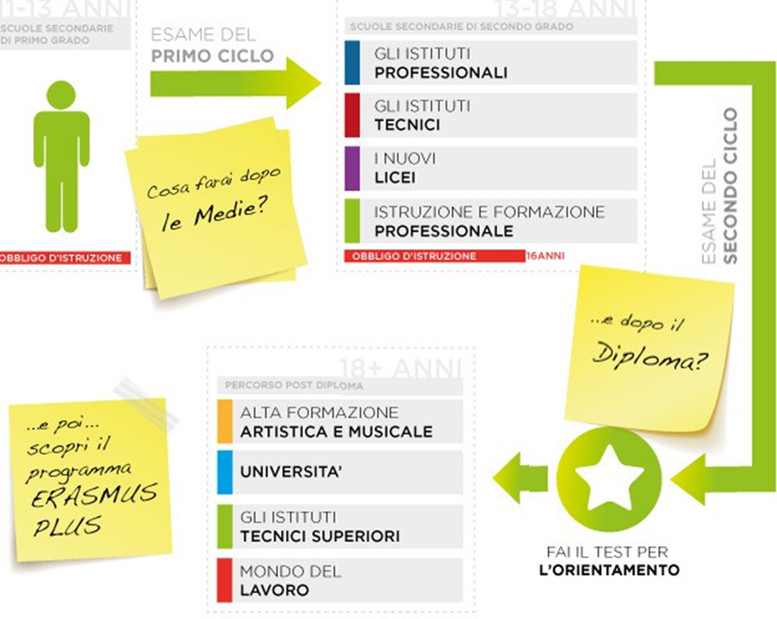

Scheda 4 – Tutte le possibili strade
Qui di seguito, a tale scopo, ti riportiamo un’immagine per riflettere sui possibili percorsi formativi che potresti considerare più giusti per te, ora che hai più conoscenza delle tue caratteristiche, attitudini, interessi e preferenze nel modo di studiare e di immaginare il tuo lavoro.

Scheda 5 – Come ti senti di fronte alla scelta?
Come ti vedi adesso pensando che al termine della scuola media dovrai scegliere cosa fare dopo?
Prova a riflettere, scegliendo l’opzione che senti più vicina a te in questo momento.